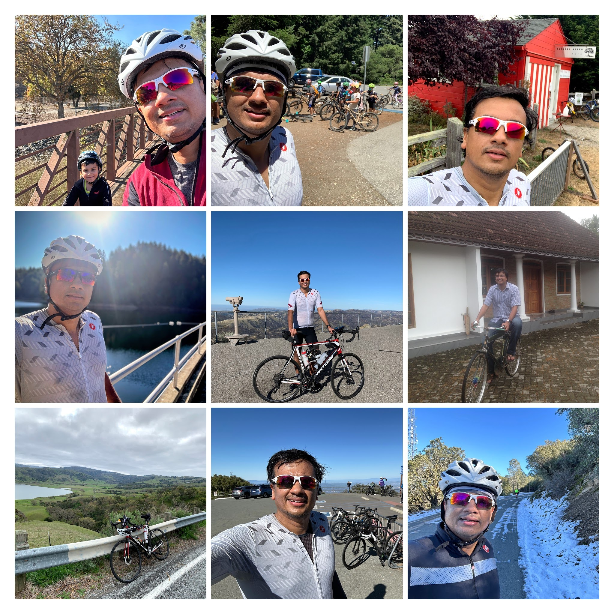

The Story Behind RideByHeart
Built by a systems engineer who loves the intersection of hardware, software, and cycling.
Want the short version? Read the brief story

From Kernel Hacking to Bike Riding
I'm Jithu Joseph, and for most of my career, I've been working deep in the stack—Linux kernel development, device drivers, embedded systems, and low-level software where hardware meets code. I spent nearly a decade at Intel working on the Core Linux Kernel Team, contributing many patches to the mainline kernel, maintaining x86 platform drivers, and developing features like In-Field Scan (IFS) for detecting faulty CPU components in live systems.
My work involved CPU caches, real-time systems, USB drivers, network protocols, and occasionally hobby robotics projects. There's something deeply satisfying about developing low level software.
How I Became a Cyclist
I came to the United States 12 years ago for graduate school at the University of Utah in Salt Lake City. My apartment in University Village sat at the base of Emigration Canyon, a popular local climb. Every weekend morning, I'd wake up and watch cyclists streaming past my window, heading up the canyon. I got intrigued, bought a bike, took it up that hill, and never looked back.
After finishing my MS in Computer Science, I moved to the Bay Area about 10 years ago, initially settling in Santa Clara. I explored classic Bay Area climbs: Mount Hamilton, Old La Honda, Tunitas Creek, Kings Mountain, Pescadero Creek, Calaveras, Mount Diablo. The hills became my weekend routine.
About three years ago, I moved a bit inland from the proper Bay Area to a small town called Mountain House, near Livermore. Ever since, Mount Diablo has been my local stomping ground. On most weekends, you'll find me riding up that mountain. Sometimes I take my elder son (who is now 6 Yo) on easier routes. Cycling has become more than fitness—it's family time, exploration, and a mental reset from the week's work.
Why RideByHeart Exists
I wanted to combine a couple of my passions: cycling, fitness, and that hardware-software interaction I've always loved. Building a simple indoor trainer controller app without a 20$ monthly subscription seemed like the logical thing to do
RideByHeart implements the FTMS (Fitness Machine Service) Bluetooth protocol to control any compatible smart trainer—Wahoo, Tacx, Elite, Saris etc. In addition to structured workouts similar to what you would find in regular cycling Apps like zwift, TR ... RideByHeart provides certain niche features like ability to easily import custom workouts(.zwo format), heart rate zone training with automatic resistance adjustment, TCX export for Strava etc. No subscriptions, no accounts, no data collection, no features you won't use.
I've canceled my Zwift subscription and now use RideByHeart for all my indoor sessions. Is it perfect? No. This is version 1.7, and there's a lot I want to improve. But it works, it's focused, and it respects your time and wallet. I'm releasing it now to get feedback from real riders and iterate quickly.
What's Next
This is an exploration phase for me—combining technical work with something I'm personally passionate about. I'm actively developing RideByHeart, responding to user feedback, and adding features that matter for focused training. Direct Strava uploads, expanded workout libraries, enhanced visualizations—these are coming.
I'm based in Mountain House, California, and you can often find me riding up Mount Diablo on a weekend or on the trainer in my garage. If you have feedback, feature requests, or just want to share your experience with the app, I'd love to hear from you.
Acknowledgments
Special thanks to my friend Bimal Viswanath for providing continuous feedback and constructive suggestions. His insights as both a cyclist and fellow technologist have been invaluable in identifying and fixing certain app issues.
Connect
- Email: support@ridebyheart.app
- X (Twitter): @jithu83
- Strava: Follow my rides
- GitHub: @jithu83
- Blog: Technical writing and projects
- Linux Kernel: My contributions